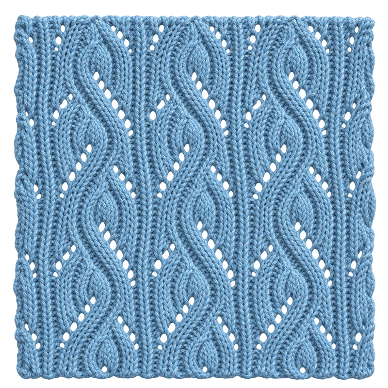

RIOLA ACADEMY
RIOLA ACADEMY
Four directions + one playful bonus
Digital fashion × real-time worlds
One workshop.
Four ways in.
Each direction keeps the same workshop, information and interactions. What changes is the emotional entry point — so the team can choose a voice before committing to production.

Refined Original
Bright, calm and closest to the current RIOLA identity — with better hierarchy, consistency and responsive behavior.

Cinematic Studio
Deep contrast, warm light and a game-inspired mission map — an atmospheric way into the workshop.

Editorial Lab
A graphic, portfolio-led system with cobalt, acid lime and hard edges — the most distinctive and design-driven option.
Afterglow Studio
Warm copper, sculptural details and softly floating paper folders. Digital craft with a human touch.
Folderverse
The folders have escaped. A playful whole-page flight mode, with a pause button and perfectly grounded workshop navigation.